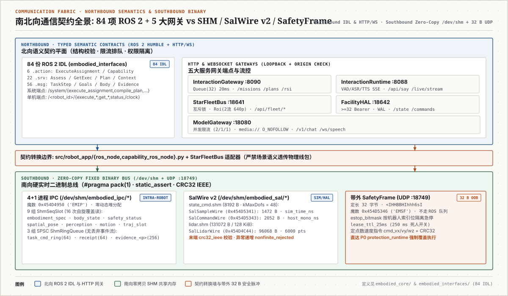

FACRI 采用「北向强类型语义契约 + 南向定长零拷贝二进制总线」的混合通信架构：系统编排、多机调度与交互应用依托 ROS 2 IDL 及 HTTP/WebSocket 网关维持结构严谨性；端侧物理控制面则剥离序列化与动态内存分配，全部运行于共享内存顺序锁、无锁环形队列以及定长 UDP 安全脉冲之上。

北向契约与南向传输总览
| 通信通道 | 覆盖边界 | 传输机制与隔离属性 | 权威参考位置 |
|---|---|---|---|
| ROS 2 V2–V5 IDL 契约 | SystemApp ↔︎ RobotApp 边界节点 |
84 份强类型消息、服务与异步动作定义，支持版本演进与显式取消 | 下方折叠清单与 src/embodied_interfaces/ |
| HTTP / WebSocket 网关平面 | 前端、模型推理、工装设备与车队调度 | 有界排队、跨域来源拦截、Bearer Token 鉴权与预写日志防丢失 | 下方折叠清单与工装与地勤设备接入 |
| 端侧 4+1 进程间 IPC | robot_supervisor 与四个工作子进程 |
共享内存无锁顺序锁槽位与单写单读环形队列 | 单机 C++20 4+1 多进程实时架构 |
SalWire v2 共享内存 |
robot_body_rt ↔︎ 物理仿真 / 硬件桥接 |
定长紧缩结构体与 IEEE CRC32 校验 | HAL 硬件抽象层与 SalWire v2 协议 |
带外 SafetyFrame 脉搏 |
安全守护进程 ↔︎ 本机保护运行域 | 18749 端口 32 字节 UDP 固定帧，旁路所有通用业务队列 | src/embodied_core/include/embodied_core/safety_frame.hpp |
展开 84 份 ROS 2 IDL 契约清点与服务端点映射
1.
接口定义分类统计（src/embodied_interfaces/）
仓库公共接口包共维护 84 份 IDL 文件（此外
src/robot_app/manipulation_motion_planning/ 独立定义
PlanUpperBodyTrajectory.action 与
PlanningReport.msg）：
| IDL 类型 | 文件数量 | 核心契约分组说明 |
|---|---|---|
.action |
6 | 任务分派 ExecuteAssignment{,V5}（2）、能力执行
ExecuteCapability{,V3,V4,V5}（4） |
.srv |
22 | 能力评估 AssessCapability{,V3,V4,V5}（4）、执行查询
GetExecution{,V3,V4,V5}（4）、能力目录
GetCapabilities（1）、规划任务控制
CompilePlan / SubmitMission / GetMission / ControlMission / ListMissions / ControlAssignment（6）、上下文与记忆
GetEmbodimentStatus / GetManipulationContext / GetRobotContext / GetRuntimeConfig / GetSystemCatalog / QueryMemory / QueryMemoryRecords（7） |
.msg |
56 | 任务步骤与同步
TaskAssignment{,V5} / TaskStep{,V5} / AutoTaskGoalV5；V2–V5
能力请求/反馈/结果；本体状态与传感
EmbodimentStatus / RobotStatus / RobotCapabilities / BodyMeasurementsV1 / RgbdFrameV1 / GraspMechanismCommand / GraspMechanismState；导航操作目标
NavigationGoal{,V2} / ManipulationGoal{,V2,V3,V4} / SpatialGoalV2 / TimedCartesianTrajectory / CartesianTrajectoryPoint；资源与证据
ResourceRequirement{,Group} / ResourceStatus / EvidencePacket / CalibrationIdentity / QualificationStatus / MemoryItem |
2. 主要 ROS 2 服务端点映射
- 系统层（
src/system_app/adapters/ros/）：注册 Action/system/execute_assignment（支持异步取消远端目标），以及服务/system/compile_plan、/system/submit_mission、/system/get_mission与/system/control_mission。 - 单机边界层（
src/robot_app/ros_node.py、src/robot_app/capability_ros_node.py、src/robot_app/embodiment_ros.py）：按机器人前缀暴露任务与能力动作/execute_assignment{,_v5}、/execute_capability{,_v3,_v4,_v5}及评估、查询、控制与本体状态服务，周期发布状态、能力、证据、关节与 IMU 测量并订阅/clock。
展开五大 HTTP 与 WebSocket 网关平面参数表
| 服务名称与默认端口 | 核心源码位置 | 认证与流量控制机制 | 核心端点清单 |
|---|---|---|---|
| InteractionGateway（127.0.0.1:8090） | src/system_app/interaction_gateway/ |
拒绝跨源 Origin；内部队列上限 32，每 20 ms 排空最多 8 条（8 s 超时） | /requests /configuration /agent/* /missions* /control /planning-context /plans* /catalog /context /workpiece-progress /memory/* /library/* /operator/* /display/perception/* /rsi/* |
| InteractionRuntime WebUI（127.0.0.1:8088） | src/system_app/modules/interaction_runtime/ |
语音 VAD/ASR/TTS 与 SSE LiveHub 实时推送 | /api/audio/{transcribe,speak} /api/live/{snapshot,recent,stream} /api/say /api/tour/{view,operation} /api/task/cancel /api/health |
| StarFleetBus（18641 端口） | src/system_app/fleet_bus/star_fleet_bus.py |
资源互斥令牌登记；ROI 护卫默认上限 2 路流、640×480、租约 TTL 15.0 s | /api/fleet/* 与
/api/fleet/v1/*（health / agents / assignments/{robot_id}/next / receipts / telemetry / resources/* / corridor/* / stream/*） |
| FacilityHAL Gateway（18642 端口） | src/facility_hal/gateway/http_server.py |
要求不少于 32 字符 Bearer Token、拒绝跨源 Origin、基于 AckJournal WAL 重放防丢 | GET /state、POST /commands、GET /commands/{request_id}、POST /operator-inputs（SIM_EQUIPMENT_DEBUG_V1）、GET /operator-inputs/{event_id} |
| ModelGateway（127.0.0.1:18080） | apps/model_gateway/ |
分调用方 Bearer Token 与并发限流（主文本 2、RSI 1、ASR/TTS/Embedding
各 1，全队列 32）；media:// 强制 O_NOFOLLOW 与
SHA-256 核验 |
GET /health/{live,ready}、/v1/{models,chat/completions,embeddings,audio/transcriptions}、WS /gateway/v1/speech、/gateway/v1/{capabilities,requests/*,workers/*/reconcile} |
展开 SalWire v2、SHM IPC 槽位与 32 字节 SafetyFrame 布局
1.
SalWire v2
定长零拷贝线格式（src/embodied_core/include/embodied_core/sal_wire.hpp）
映射目录位于
/dev/shm/embodied_sal/<run_id>/<robot_id>/，全结构体采用
#pragma pack(push, 1)、static_assert
编译期核验与末端 crc32_ieee 校验，支持上限 48 轴自由度与
6000 点雷达点云：
| 文件名与总大小 | 结构体名称与魔数 | 精确大小 | 核心承载字段 |
|---|---|---|---|
state_cmd.shm（8192 B）上半区（偏移 8 B） |
SalSampleWire（0x454D5341，v2） |
1472 B（CRC 偏移 1468） | epoch / active_dofs / seq / sim_time_ns、q/dq/tau_est[48]、底盘六自由度与速度、IMU、左右腕六维力
wrist_wrench_{l,r}[6]、机构与抓取标志、持物哈希与故障字 |
state_cmd.shm（8192 B）下半区（偏移 4104 B） |
SalCommandWire（0x454D5343，v2） |
2052 B（CRC 偏移 2048） | epoch / active_dofs / seq / host_monotonic_ns、modes[48]、q_ref/dq_ref/kp/kd/tau_ff[48]、底盘速度
base_twist[3]、机构目标、传送带速度与控制标志位
cmd_flags |
lidar.shm（131072 B，偏移 8 B） |
SalLidarWire（0x454D4C44，v2） |
96068 B（CRC 偏移 96064） | epoch / point_count / seq / sim_time_ns / frame_id[32]
及最多 6000 组 16 B SalLidarPointXYZI |
2.
单机 4+1
进程内部共享内存（src/embodied_core/include/embodied_core/shm_ipc.hpp）
映射路径
/dev/shm/embodied_ipc/<run_id>/<robot_id>/（魔数
0x454D4950）：无锁顺序锁状态槽
ShmSeqSlot<PodT> 包括
embodiment_spec.shm（EmbodimentSpecPod，0x454D4553）、body_state.shm、safety_status.shm、spatial_pose.shm、perception_obs.shm、motion_cmd.shm、traj_slot.shm（最多
128 路点与 32 轴控制组）、proc_health.shm 与
health_<proc>.shm；单写单读环形队列
ShmRingQueue<PodT, N> 包括容量 64 的
task_cmd_ring.shm（单步载荷上限 3584 B）与
task_receipt_ring.shm，以及容量 256 的分进程审计环
evidence_ring_<proc>.shm。
3.
带外 SafetyFrame 32
字节布局（src/embodied_core/include/embodied_core/safety_frame.hpp）
Python 侧通过 src/system_app/fleet_bus/safety_pulse.py
按 <IHHBBHIhhh6sI 小端序序列化发送至 18749 UDP
端口：
| 偏移与类型 | 字段名称 | 取值语义与安全规则 |
|---|---|---|
| 0..3（uint32） | magic |
固定魔数 0x454D5346 |
| 4..5（uint16） | version_flags |
低 4 位为版本 0x0001；标志位含心跳
0x0010、遥操作接管 0x0100、清故障
0x0200 |
| 6..7（uint16） | estop_bitmask |
按机器人索引位隔离触发软急停；0xFFFF
表示全队广播急停 |
| 8 / 9（uint8） | target_robot_idx / lease_ttl_25ms |
遥操作目标序号（0xFF 为广播）与死人开关租约时长（以 25
ms 为粒度） |
| 12..15（uint32） | seq_u32 |
单调递增序列号 |
| 16..21（3 × int16） | cmd_vx_mmps / vy / wz_mradps |
定点数毫速度指令，解码后按 1e-3 还原为 m/s
与 rad/s |
| 22..27 / 28..31 | sender_epoch_tag[6] / crc32_ieee |
发送代际标签与前 28 字节 IEEE CRC32 校验，总包长严格为 32 字节 |